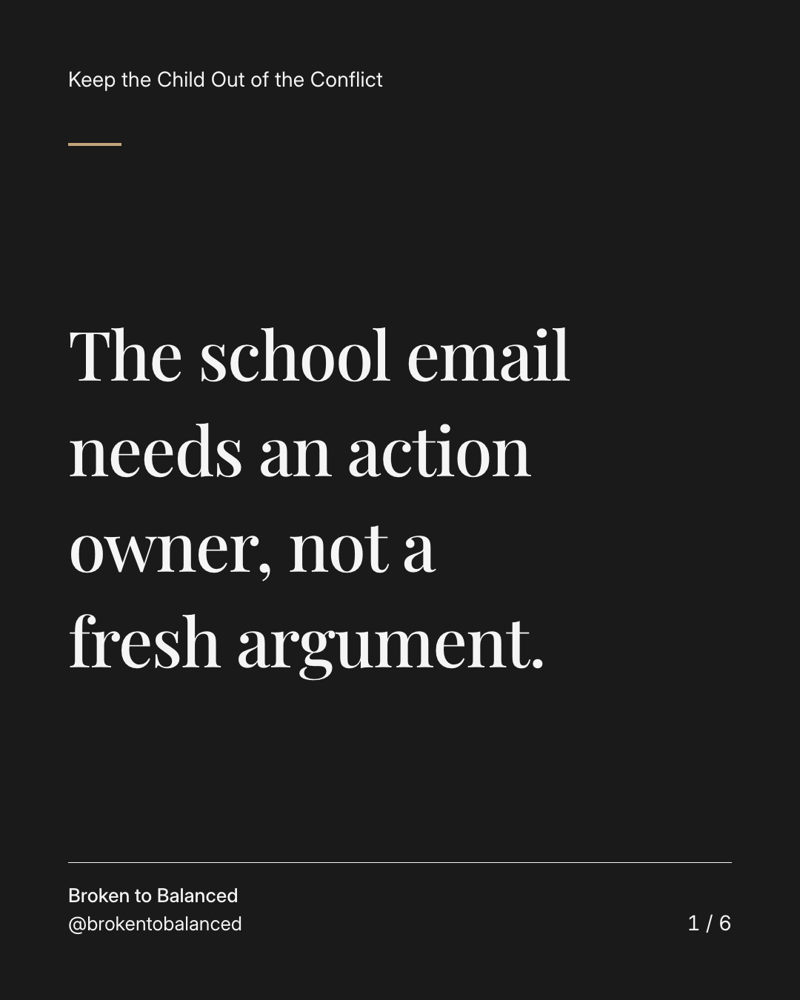
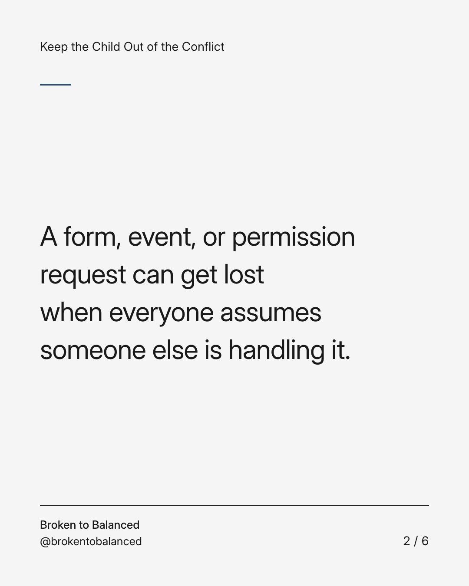
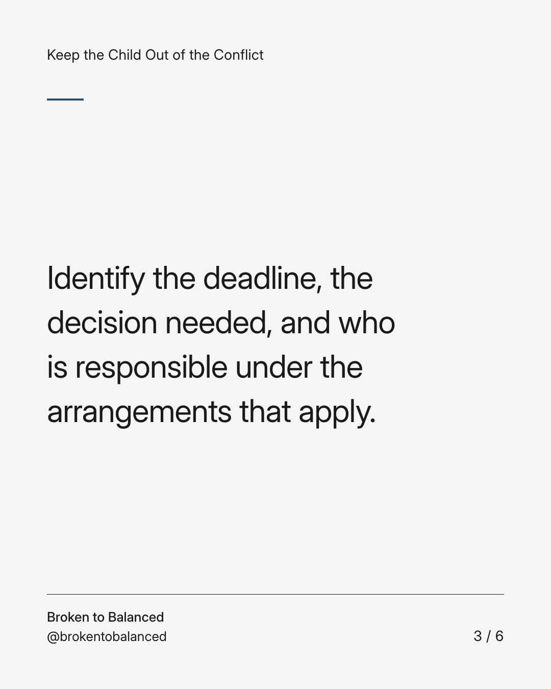
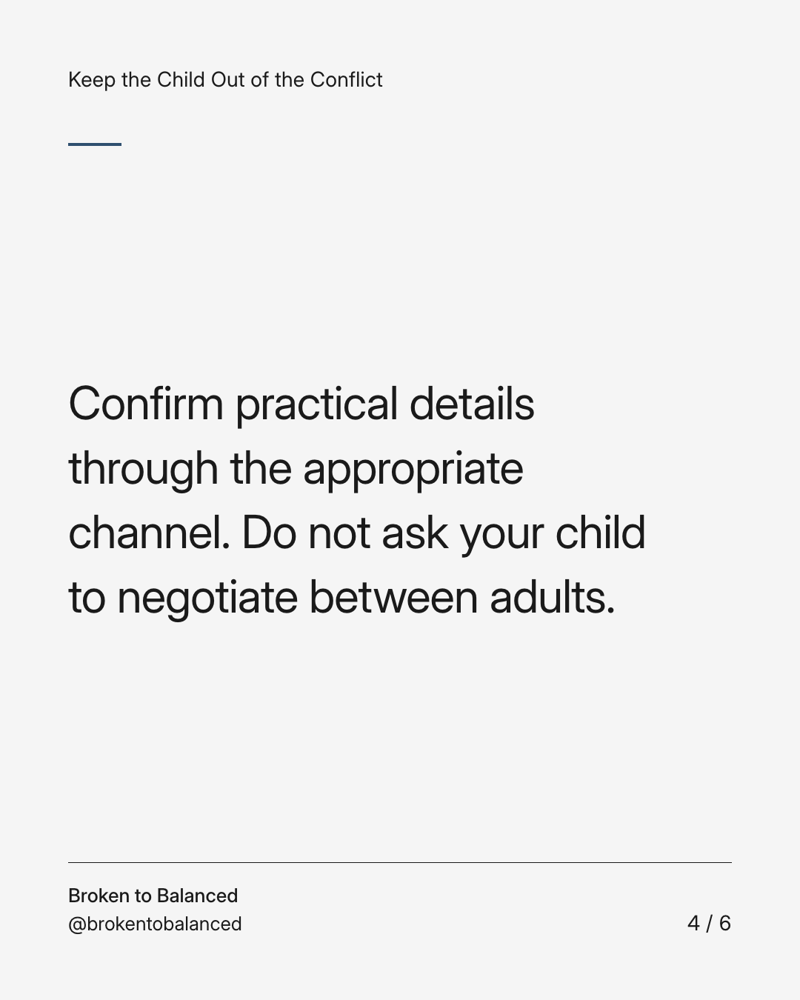
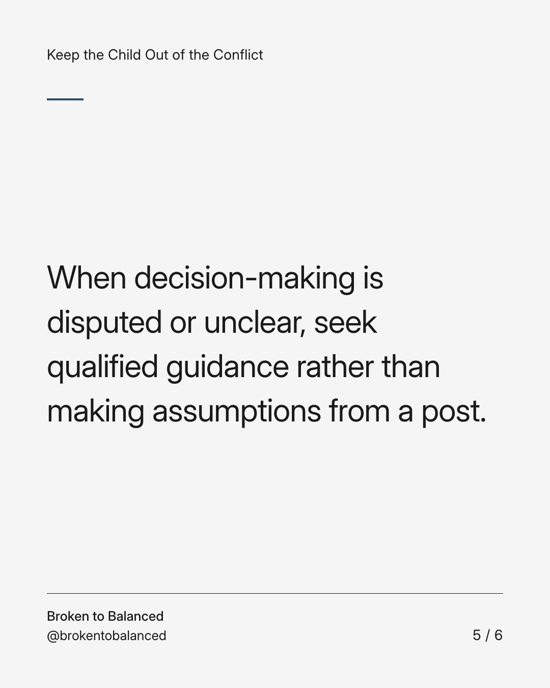
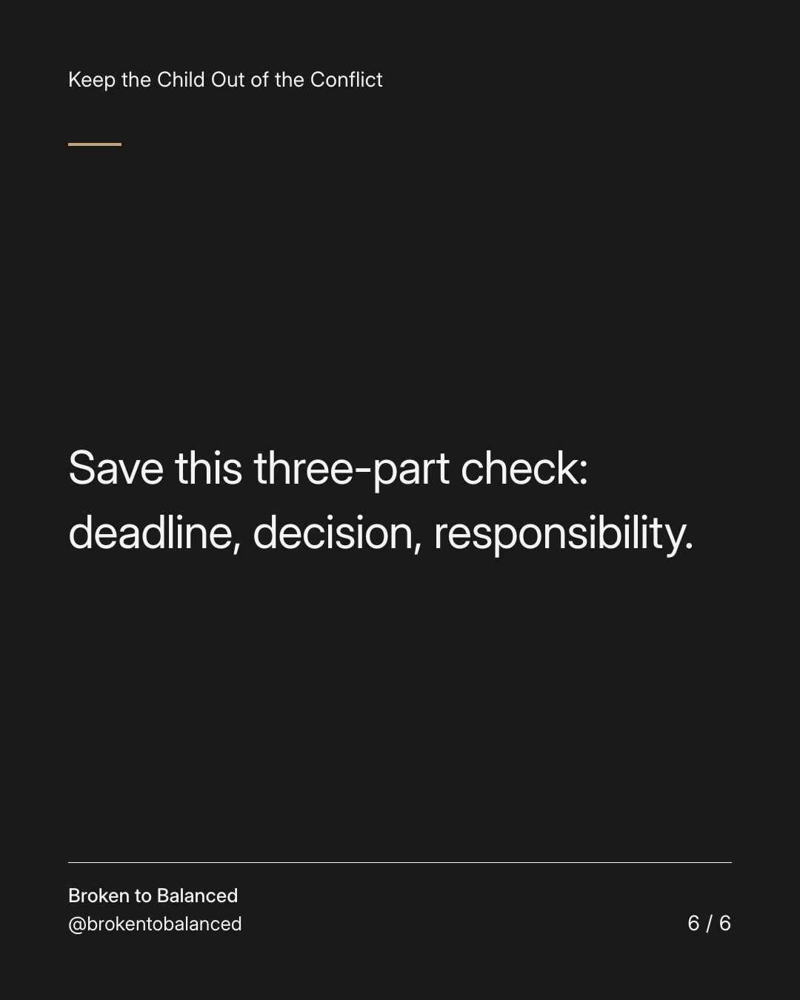

Exact text and accessibility text
The school email needs an action owner, not a fresh argument.
Slide 1 of 6. The school email needs an action owner, not a fresh argument.


Exact text and accessibility text
A form, event, or permission request can get lost when everyone assumes someone else is handling it.
Slide 2 of 6. A form, event, or permission request can get lost when everyone assumes someone else is handling it.


Exact text and accessibility text
Identify the deadline, the decision needed, and who is responsible under the arrangements that apply.
Slide 3 of 6. Identify the deadline, the decision needed, and who is responsible under the arrangements that apply.


Exact text and accessibility text
Confirm practical details through the appropriate channel. Do not ask your child to negotiate between adults.
Slide 4 of 6. Confirm practical details through the appropriate channel. Do not ask your child to negotiate between adults.


Exact text and accessibility text
When decision-making is disputed or unclear, seek qualified guidance rather than making assumptions from a post.
Slide 5 of 6. When decision-making is disputed or unclear, seek qualified guidance rather than making assumptions from a post.


Exact text and accessibility text
Save this three-part check: deadline, decision, responsibility.
Slide 6 of 6. Save this three-part check: deadline, decision, responsibility.
Exact caption
Plain-text fallback: select and copy the caption.